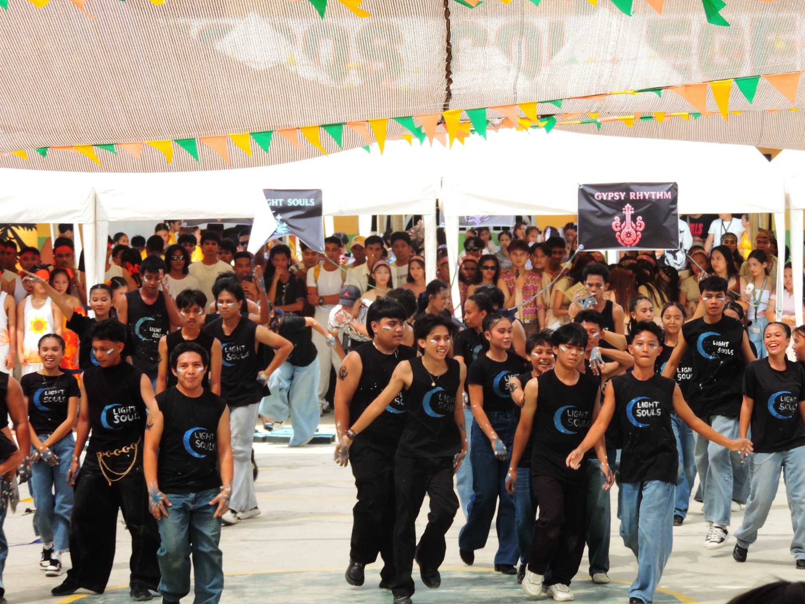
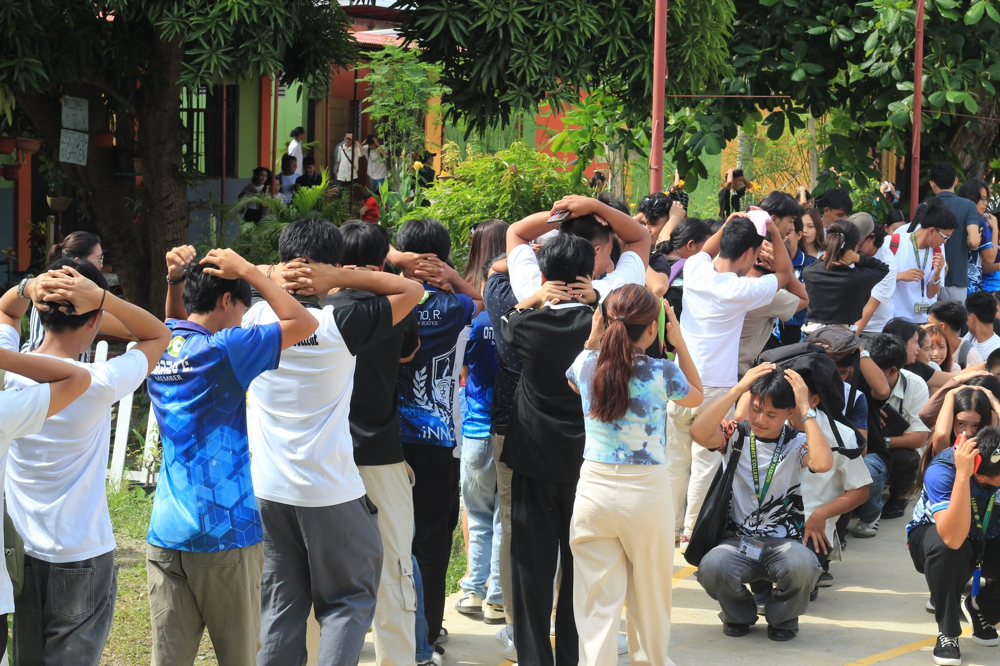
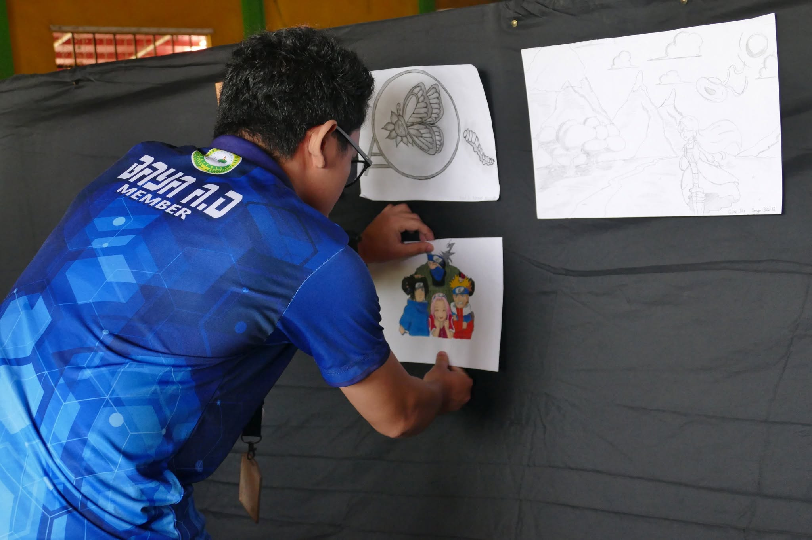
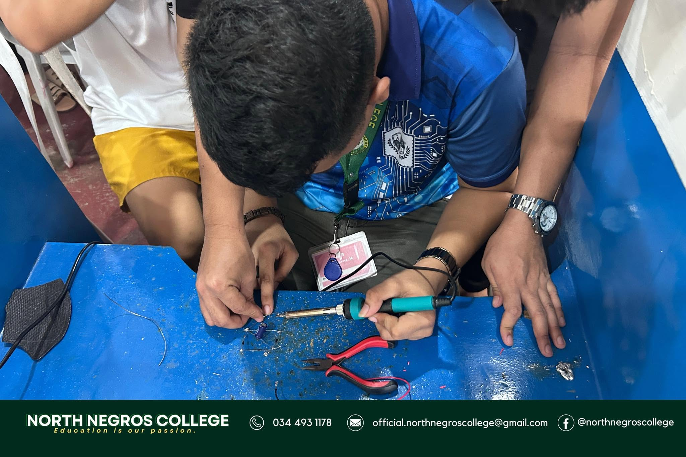
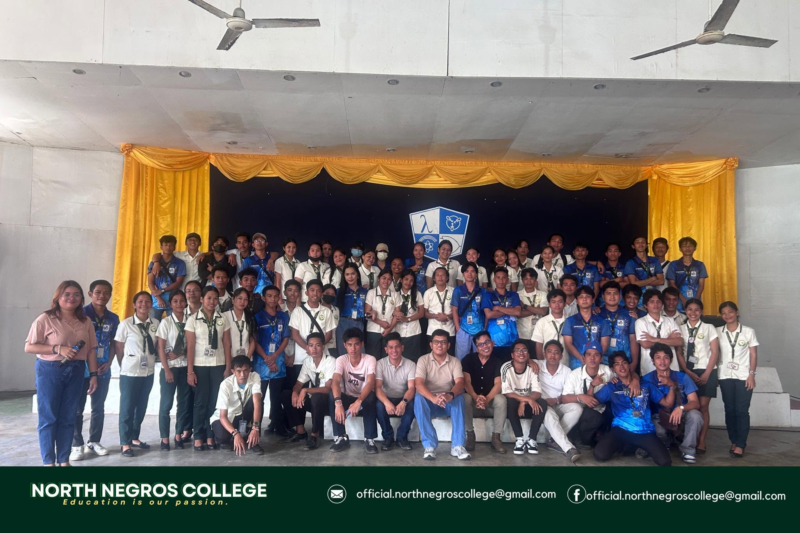

Academic Programs at North Negros College
Bachelor of Science in Computer Science | BSCS
Focuses on programming, software development, databases, algorithms, and computer systems.





Bachelor of Science in Business Administration | BSBA
Focuses on business operations, management, finance, and supply chains.


Bachelor of Science in Hospitality Management | BSHM
Focuses on hospitality operations, food and beverage services, accommodations, and events.